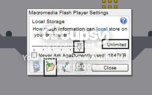

#18834 1 2008-01-14T00:46:38Z fe_r_on As I was playing through level 55, I opened up another window to look on highscores for help. As I went to the highscore menu, I noticed that I had none of my data. Before, I had All but 55-59 and 85-89 done. Well I went and looked for the .sol file, which I had a backup on my flash drive, and I saw that my .sol file was a lot smaller. It was only 1909 Kb Instead of 1922. Then I looked over and I saw an Sxx file. n_v14v_userdata.sxx. It seemed to be saving my progress into there. It was only 44 Kb, so I deleted it. I copied my .sol file onto the flash drive.
I opened up another window, and the same thing happened. I went back to the .sol file location and the file was back. So i beat 55, and the file refreshed. It now has 1922 KB of progress as I should have, except it should be saving on the .sol file, not .ssx. Well now, I opened up the .sol file off my flash drive onto another computer, and it doesn't have 96-99, 55, and 83-85 done.
My first question is: What is a ssx file. I tried searching multiple places and browsing the forums, but I came up with nothing.
Second question: Why is it saving my progress to the ssx, not the .sol, and why does it reset every time I open a new window
And my Third question: Is there any way I can fix this without having to do those episodes again.
Thanks.
#400635 2 2008-01-14T01:02:29Z Mosh As I was playing through level 55, I opened up another window to look on highscores for help. As I went to the highscore menu, I noticed that I had none of my data. Before, I had All but 55-59 and 85-89 done. Well I went and looked for the .sol file, which I had a backup on my flash drive, and I saw that my .sol file was a lot smaller. It was only 1909 Kb Instead of 1922. Then I looked over and I saw an Sxx file. n_v14v_userdata.sxx. It seemed to be saving my progress into there. It was only 44 Kb, so I deleted it. I copied my .sol file onto the flash drive.
I opened up another window, and the same thing happened. I went back to the .sol file location and the file was back. So i beat 55, and the file refreshed. It now has 1922 KB of progress as I should have, except it should be saving on the .sol file, not .ssx. Well now, I opened up the .sol file off my flash drive onto another computer, and it doesn't have 96-99, 55, and 83-85 done.
My first question is: What is a ssx file. I tried searching multiple places and browsing the forums, but I came up with nothing.
Second question: Why is it saving my progress to the ssx, not the .sol, and why does it reset every time I open a new window
And my Third question: Is there any way I can fix this without having to do those episodes again.
Thanks.
The following will help us answer this question:
- What is your OS?
- How many KB is Shockwave/Flash allowed to save to your computer?
- What, if any, Antivirus are you running? (I had an antivirus problem with N a while back)
- What is the directory you were looking in? Please remove the "Random String of Numbers" and your computer's username field in the address bar of your folders.
- Why were you copying to a Flash Drive?
- What was the process of returning the .sol file to it's normal location from your Flash Drive?
#400642 3 2008-01-14T01:14:13Z fe_r_on The following will help us answer this question:
* What is your OS?
* How many KB is Shockwave/Flash allowed to save to your computer?
* What, if any, Antivirus are you running? (I had an antivirus problem with N a while back)
* What is the directory you were looking in? Please remove the "Random String of Numbers" and your computer's username field in the address bar of your folders.
* Why were you copying to a Flash Drive?
* What was the process of returning the .sol file to it's normal location from your Flash Drive?
Bear with me, I'm not too computer literate, so I may be answering some of your questions wrong.
I'm Running Windows XP, and I have plenty memory left on my C Drive which is where it's saved. I run Norton, McAffee, Se AdAware, and some Windows Virus checker. I was looking at my .sol file through C Drive> Documents and Settings> Me> Application Data> Macromedia> Flash Player> #SharedObjects> Numbers> localhost. I was copying the data to my flash drive to have a backup file on my flash drive and another computer (the one I'm working on now- the error occured on my GateWay Laptop unning Widnows 2000 Xp Tablet Edition). in case something like this happened, which didn't help. And once I had the file on my flash drive, I opened up the D Drive(which was the drive in which my flash drive was in), went through the folders to the folder with the file (its own seperate folder), and copied it to the same location as the other computer.
Sorry if some of the questions were answered incorrectly, Please let me know if I can refine some of my answers.
Thanks.
#400653 4 2008-01-14T01:33:06Z Mosh The following will help us answer this question:
* What is your OS?
* How many KB is Shockwave/Flash allowed to save to your computer?
* What, if any, Antivirus are you running? (I had an antivirus problem with N a while back)
* What is the directory you were looking in? Please remove the "Random String of Numbers" and your computer's username field in the address bar of your folders.
* Why were you copying to a Flash Drive?
* What was the process of returning the .sol file to it's normal location from your Flash Drive?
Bear with me, I'm not too computer literate, so I may be answering some of your questions wrong.
I'm Running Windows XP, and I have plenty memory left on my C Drive which is where it's saved. I run Norton, McAffee, Se AdAware, and some Windows Virus checker. I was looking at my .sol file through C Drive> Documents and Settings> Me> Application Data> Macromedia> Flash Player> #SharedObjects> Numbers> localhost. I was copying the data to my flash drive to have a backup file on my flash drive and another computer (the one I'm working on now- the error occured on my GateWay Laptop unning Widnows 2000 Xp Tablet Edition). in case something like this happened, which didn't help. And once I had the file on my flash drive, I opened up the D Drive(which was the drive in which my flash drive was in), went through the folders to the folder with the file (its own seperate folder), and copied it to the same location as the other computer.
Sorry if some of the questions were answered incorrectly, Please let me know if I can refine some of my answers.
Thanks.
Try this:
Right-click on the N window. And select "Settings"
Then adjust the "Local Storage Tab" (highlighted at the bottom), and set the slider (highlighted middle) all the way to the right, so that the words to the right of it read "Unlimited" (highlighted right).

Try this on both computers - your Laptop might not be configured to allow that much data transfer to Shockwave or Flash, and it might be trying to save it to a new file type to allow N to "try" to read it in addition to the .sol, which it isn't doing because it isn't programmed to.
#400655 5 2008-01-14T01:37:55Z fe_r_on It was already on the highest setting, and when I opened the file, the sxx file reset to 44Kb...
#400660 6 2008-01-14T01:53:59Z George Errors like that can occasionally occur in N. Give it a few days and it should go back to normal.
#400665 7 2008-01-14T02:01:06Z fe_r_on Thanks. Is it safe to Shut Down/ Restart?
#400738 8 2008-01-14T06:43:59Z George Thanks. Is it safe to Shut Down/ Restart?
Yep. There shouldn't be any problems. In fact, restarting your computer often helps it go back to normal, if you know what I mean.
#400744 9 2008-01-14T09:03:04Z Atilla I find that opening two copies of N simultaneously seems to increase the chance of .sol mishaps greatly. I'd try to avoid it, or at least back up your data beforehand.
#400852 10 2008-01-14T21:56:54Z fe_r_on Ok Everything is back to normal. Thanks for helping, guys. Especially Furious George; if you wouldn't have told me to leave it alone, I probably would have messed it up more